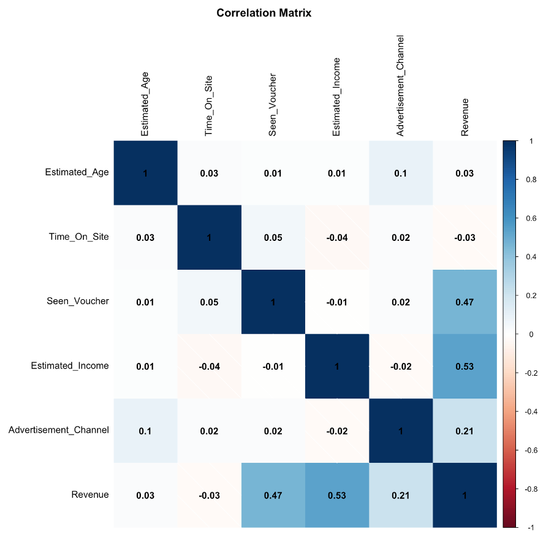

Business Understanding
Drinks@Home.uk is a UK-based e-commerce website that sells and delivers both alcoholic and non-alcoholic beverages across Great Britain. The company aims to gain an in-depth understanding of the factors driving their sales through data analysis of existing customers. This analysis will help revise their marketing strategies to increase sales.
The key objectives are to:
- Demonstrate how key variables affect customer spending.
- Recommend the marketing strategy most likely to increase company revenue.
Data Understanding
The dataset provided by Drinks@Home.uk contains information about 400 customers, including estimated age, advertisement exposure, estimated income, time spent on the website, voucher availability, and revenue. Key insights from this data will help in choosing an appropriate analytics model to uncover the influencing factors of customer spending.
Figure 1: Data Summary.
Revenue Analysis
The histogram of revenue indicates a slight right skew, with most customers spending between £50 and £100.
Figure 2: Revenue Histogram.
Correlation Matrix
The correlation matrix shows a strong positive correlation between revenue and both Seen_Voucher and Estimated_Income. Revenue also has a positive correlation with Advertisement_Channel but negligible linear relationships with Estimated_Age and Time_On_Site.

Figure 3: Correlation Matrix.
Scatter Plots
Further analysis using scatter plots confirms that revenue positively correlates with Estimated_Income and Seen_Voucher. This indicates that offering vouchers significantly increases revenue.
Figure 4: Scatter Plot - Revenue vs Estimated_Income and Seen_Voucher.
Data Preparation
Creating Dummy Variables
For robust regression modeling, categorical variables like Advertisement_Channel need to be converted into dummy variables. The Advertisement_Channel has four values: Leaflet, SocialMedia, SearchEngine, and Influencer. By creating dummy variables, we can analyze the influence of each channel individually on revenue.
| Advertisement_Channel |
Leaflet |
SocialMedia |
Influencer |
| Leaflet |
1 |
0 |
0 |
| SocialMedia |
0 |
1 |
0 |
| SearchEngine |
0 |
0 |
0 |
| Influencer |
0 |
0 |
1 |
Identifying and Handling Outliers
Outliers are extreme observations that can distort analysis. A box plot of the revenue and estimated income shows some highly deviated values. These were handled by selecting values as extreme as 1.5 times the IQR and creating a subset of the data. After removing outliers, the dataset contained 368 observations, ensuring a more accurate analysis.
Figure 5: Box Plot of Revenue and Estimated_Income.
Figure 6: Box Plot of Revenue and Estimated_Income after Handling Outliers.
Data Modelling
A multiple linear regression model was selected to describe the relationship between customer variables and revenue. The final model includes Seen_Voucher, Estimated_Income, and dummy variables for Advertisement_Channel (Leaflet, SocialMedia, and Influencer).
Figure 7: Multiple Linear Regression.
The model, based on the pre-processed data, produced an Adjusted R-squared of 0.5897, explaining almost 59% of the variance in revenue. High F-statistic and low p-value confirm the statistical significance of the data. Coefficients for Seen_Voucher, Estimated_Income, and Influencer advertisements were positive, indicating that increases in these variables lead to notable revenue increases.
Evaluation
1. Advertising for Customers Over 45
There was no significant correlation between age and revenue, suggesting that targeting customers over 45 would not be effective.
Figure 8: Customer Age Distribution.
2. Providing a £20 Voucher
Offering a £20 voucher showed a strong positive correlation with revenue, making this strategy highly recommended.
Figure 9: Box Plot of Seen_Voucher vs. Revenue.
3. Influencer Advertising
While influencer advertisements positively correlate with revenue, their impact is less significant compared to vouchers. Therefore, this strategy is not preferred over providing vouchers.
Figure 10: Scatter Plot of Seen_Voucher and Influencer with Revenue.
Evaluating the Model
The multiple linear regression model successfully meets the necessary assumptions and offers a clear solution to the company's business questions. The residuals are fairly distributed across the quadrants, with a median value near zero. Additionally, the scatterplot of Actual vs. Predicted values indicates that most data points align closely with the regression line. Therefore, we can conclude that the model is optimal.
Figure 11: Scatter Plot of Predicted Revenue with Actual and Residuals.
Conclusion
The key variables affecting the company's revenue are voucher availability, estimated income, and leaflet advertisements. Providing £20 vouchers and targeting customers based on their income levels are effective strategies. Influencer advertisements have a positive impact but are less significant than vouchers.
To boost revenue, Drinks@Home.uk should continue offering £20 vouchers and focus less on leaflet advertisements and targeting customers over 45, as these strategies do not significantly impact revenue.